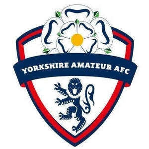

Trade Mark Journal No.2025/030 25 July 2025
UK00004214286 5 June 2025 (16,25,28,35,36,41)

- Class 16
- Yearbooks in the field of soccer.
- Class 25
- Football shirts; Football jerseys; Football shoes; Football boots; Soccer shirts; Replica football kits; Studs for football shoes; Sports jerseys; Sports shirts; Studs for football boots; Football boots (Studs for -).
- Class 28
- Football or soccer goals; Football equipment; Football gloves; Indoor football tables; Football (Tables for indoor -); Tables for indoor football; Indoor football (Tables for -); Soccer goals; Football field model toys; Soccer balls; Balls for playing sports; Soccer ball bags; Sports games; Supporters (Men's athletic -) [sports articles]; Men's athletic supporters [sports articles]; Soccer ball goal nets.
- Class 35
- Sales promotions at point of purchase or sale, for others; Business management of sporting clubs.
- Class 36
- Investment clubs.
- Class 41
- Gym activity classes; Exercise classes; Conducting fitness classes; Exercise and fitness classes; Teaching at junior high schools; Educating at senior high schools; Arranging of classes; Providing courses of instruction at high school level; Teaching at elementary schools; Conducting of classes; Providing courses of instruction at college level; Conducting classes in weight reduction; Education services in the nature of courses at the university level; Conducting distance learning instruction at the college level; Providing courses of instruction at post-graduate level; Production of course material distributed at professional lectures; Arranging and conducting of day school courses for adults; Conducting classes in exercise; Educational services provided by senior high schools; Conducting physical fitness conditioning classes; Conducting distance learning instruction at the secondary level; Conducting distance learning instruction at the primary level; School services; Organisation of football competitions; Sports club services; Football academy services; Fan club organisation; Organisation of sports events in the field of football; Fan club services; Fan clubs; Organization of soccer competitions; Organization of soccer games; Gymnasium club services; Fan clubs (Organisation of -); Fan club services (entertainment); Hosting of fantasy sports leagues; Sports coaching; Organising of football events; Fitness club services; Entertainment in the nature of football games; Training of sports players; Coaching in the field of sports; Organisation of sports tournaments; Provision of sporting club facilities; Club sporting facilities (Provision of -); Football pools services; Competitions (Organization of sports -); Organization of sports competitions; Management of events for sporting clubs; Organisation of sports competitions; Club entertainment services; Entertainment club services; Club services [entertainment]; Soccer camps; Services for the organisation of football events; Sports refereeing; Arranging of soccer games; Club education services; Soccer camp services; Conducting of soccer games; Entertainment in the nature of soccer games; Organising of sports competitions and sports events; Organising of sports events and of sports competitions; Competitions (Organising of sports -); Organising of sports competitions; Sports competitions (Organising of -); Organisation of sporting competitions and sports events.
CFYDC (chance)